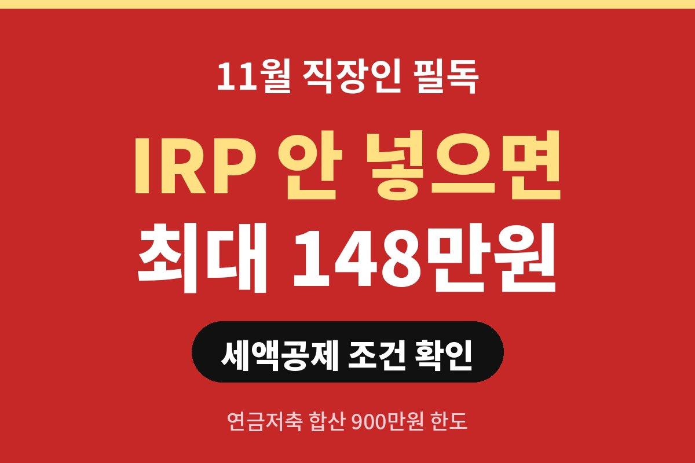
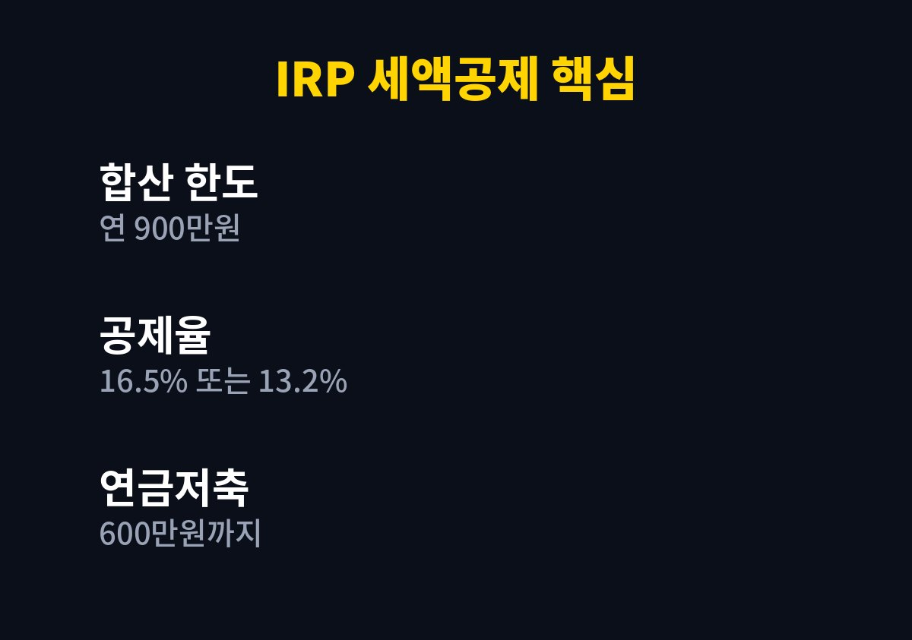
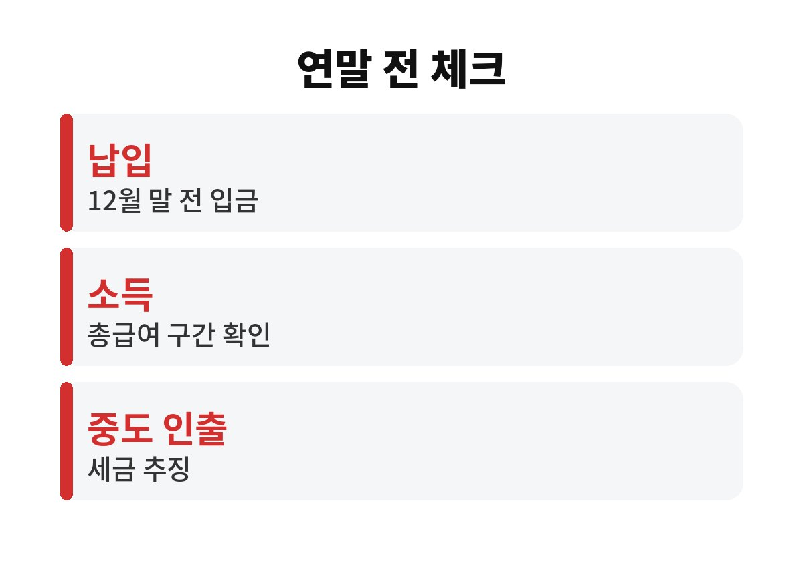

IRP 세액공제는 연금저축과 합쳐 연 900만 원까지 납입분에 공제율 16.5%(총급여 5,500만 원 이하 기준)가 적용돼, 최대 148만 원 정도를 돌려받을 수 있어요. 그런데 12월 말까지 입금하지 않으면 올해 몫은 그대로 사라진다는 사실, 직장인이라면 알고 계셨나요?
먼저 큰 틀부터 볼게요. 연금저축은 연 600만 원까지, 그리고 IRP(개인형 퇴직연금)를 더해 합산 900만 원까지 세액공제 대상이에요. 그러니까 연금저축을 이미 600만 원 채웠다면 IRP로 추가 300만 원을 넣을 수 있는 구조죠.
공제율은 소득에 따라 달라요. 총급여 5,500만 원 이하면 16.5%, 그 초과면 13.2%가 적용돼요. 900만 원을 꽉 채우면 각각 약 148만 원, 약 119만 원이 세금에서 빠지는 계산이에요. 월급쟁이에게 이 정도면 한 달 치 식비 이상이니 작은 돈이 아니죠.
네, 가능해요. 세액공제는 그해 12월 31일 안에 납입한 금액이 기준이라서 지금 시작해도 늦지 않아요. 다만 한꺼번에 900만 원을 넣기 부담스럽다면 남은 두 달 동안 나눠 넣어도 됩니다.
여기서 첫 번째 함정! 은행 영업일 마감 이후 입금이나 연휴 직전 이체는 다음 해로 넘어갈 수 있어요. 12월 말에 몰아서 하지 말고, 12월 중순쯤 여유 있게 끝내는 게 안전해요.
있어요. 두 번째 함정은 중도 인출이에요. 세액공제를 받은 돈을 55세 전에 법정 사유 없이 빼면 기타소득세 16.5%가 붙고, 그동안 받은 공제도 사실상 토해내는 셈이 돼요. 당장 쓸 생활비까지 IRP에 넣으면 오히려 후회할 수 있다는 뜻이죠.
세 번째 함정은 공제 한도만 보고 상품을 대충 고르는 거예요. IRP는 넣는 것으로 끝이 아니라 예금이든 펀드든 직접 운용해야 해요. 방치하면 수익률이 거의 없는 상태로 묶일 수 있으니, 원금이 걱정이라면 예금성 상품으로 시작하는 방법도 있어요.
| 구분 | 내용 |
| 합산 한도 | 연금저축 + IRP 연 900만 원 |
| 공제율 | 5,500만 원 이하 16.5% / 초과 13.2% |
| 최대 환급 | 약 148만 원 / 약 119만 원 |
| 납입 마감 | 12월 31일 이전 입금 완료 |

정답은 내 상황에 달려 있어요. 먼저 올해 이미 연금저축에 얼마를 넣었는지 확인하세요. 남은 한도가 곧 IRP로 채울 수 있는 금액이에요. 그리고 내가 낼 세금이 애초에 적으면 공제를 다 못 받을 수도 있어요. 세액공제는 낸 세금을 줄여주는 제도라서, 결정세액보다 더 돌려받을 수는 없거든요.
그래서 순서가 중요해요. 회사 홈택스나 연말정산 미리보기에서 예상 세액을 보고, 남는 한도를 계산한 뒤, 여유 자금 범위에서 넣으세요. 노후 자금이 목적이니 생활비는 건드리지 않는 게 기본이에요.
IRP 세액공제는 본인 명의 계좌로 본인이 납입한 금액만 해당돼요. 배우자 몫을 대신 넣어도 내 공제로는 잡히지 않아요. 맞벌이 부부라면 각자 계좌로 따로 채우는 편이 한도를 두 배로 쓰는 방법이에요. 또 연금저축과 IRP는 따로 계산되는 게 아니라 합산 900만 원이라는 점도 헷갈리기 쉬우니 꼭 기억해 두세요.
이미 5월 종합소득세나 올해 연말정산에서 공제를 못 받았더라도 크게 실망할 필요는 없어요. 내년부터 월 단위로 나눠 넣으면 부담이 훨씬 줄고, 한 번에 목돈을 만들어야 하는 스트레스도 없거든요. 월 50만 원씩 넣으면 1년에 600만 원이니까 습관만 들이면 한도를 채우기 어렵지 않아요.
마지막으로, 납입 영수증은 금융사 앱에서 바로 내려받을 수 있고 연말정산 간소화 서비스에도 자동으로 잡히니 따로 서류를 챙기느라 고생할 일은 없어요.

정리하면 IRP 세액공제는 12월 말 입금 기준, 합산 900만 원 한도, 중도 인출 주의, 이 세 가지만 기억하면 큰 실수는 막을 수 있어요. 올해 연금저축은 얼마나 채우셨나요? 댓글로 남겨주시면 같이 계산해 볼게요. 도움이 됐다면 구독도 부탁드려요!
※ 본 글은 일반 정보이며 투자 권유가 아닙니다. 세액공제 적용은 개인별 소득·세액에 따라 달라지니 국세청 안내나 세무 전문가를 확인하세요.